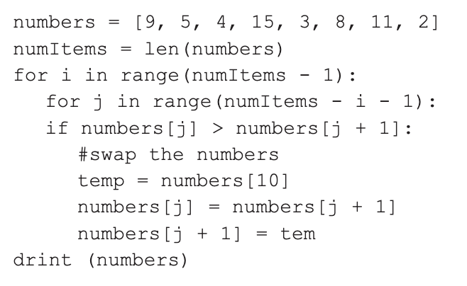

Topic A: Opcodes & Mnemonics
1. Low-level languages have features which include opcodes and mnemonics. (i) Explain the term opcode.[0/2]
- Part of an instruction or code
- Indicates what operation the processor should carry out
2. Low-level languages have features which include opcodes and mnemonics. (ii) Explain the term mnemonic, giving an example.[0/3]
- A short sequence of letters representing an instruction
- Easy for humans to remember
- Example: ADD for addition
Topic B: Assembly, High-Level Languages & Translators
3. What is the difference between Assembly language and a High-Level Language (HLL)?[0/4]
- Assembly uses mnemonics; HLL uses English-like statements
- Assembly uses an assembler; HLL uses a compiler or interpreter
- Assembly is one-to-one with machine code; HLL is one-to-many
- Assembly is machine dependent; HLL is portable
4(a). A programmer creates this function using a high-level language. Before the code can be executed, a translator must be used. State the purpose of a translator.[0/1]
- To convert high-level or assembly code into machine code
4(b). A programmer creates this function using a high-level language. Before the code can be executed, a translator must be used. Explain two differences between a compiler and an interpreter.[0/4]
- Compiler translates the whole program; interpreter translates line by line
- Compiler produces an executable; interpreter does not
- Compiler reports errors at the end; interpreter reports errors immediately
- Compiled programs hide source code; interpreted programs expose it
5(a). Fig. 3 shows assembly code written using the LMC instruction set. Indicate the programming construct that is not used in Fig. 3. [0/1]

- Iteration
5(b). Fig. 3 shows assembly code written using the LMC instruction set. When the program is run, 7 is input by the user. State the value that will be in the memory location Z when the program has run with this input.[0/1]
- 5
5(c). Fig. 3 shows assembly code written using the LMC instruction set. Write an equivalent version of the LMC assembly code shown in Fig. 3 for a procedural programming language. You should write your code using pseudocode or program code.[0/4]
X = input()
Y = 5
if X >= Y then
Z = Y
else
Z = X
endif
6(b). Fig. 1 shows assembly code written using the Little Man Computer (LMC). The program calculates and outputs the total amount that is donated to a charity in any particular day. Depending on the amount, an additional bonus may be added to each amount donated. The program shown in Fig. 1 is run once using three different inputs. Therefore, while the program is running once, it will output the updated total three times. Give the total values that are output when the values 10, 50 and 120 are input into this program.[0/3]

- 10 → 10
- 50 → 60
- 120 → 200
6(ii).Write LMC code that will reset the value of the memory location labelled total to zero and then stop the program.[0/3]
- Establishes a zero value (by use of DAT / SUB)
- Stores a zero value into total
- Program stops
LDA ZERO
STA total
HLT
ZERO DAT 0
total DAT
Question
The pseudocode algorithm here will take in two numbers from the user, multiply them together using addition and output the result.
For example, 4 multiplied by 3 would be
4 + 4 + 4 = 12.
You can assume the function input takes in a value as an integer.
numA = input("Enter first number")
numB = input("Enter second number")
answer = 0
while (numB > 0)
answer = answer + numA
contribute = numB - 1
endwhile
print(answer)Write this algorithm in assembly language using the Little Man Computer (LMC) instruction set. [6]
INP
STA NUMA
INP
STA NUMB
LOOP LDA NUMB
BRZ END
SUB ONE
STA NUMB
LDA ANSWER
ADD NUMA
STA ANSWER
BRA LOOP
END LDA ANSWER
OUT
HLT
ANSWER DAT 0
NUMA DAT 0
NUMB DAT 0
ONE DAT 1Topic D: Addressing Modes
7(a). In Orla's LMC code, she used direct memory addressing. Give three other modes of memory addressing.[0/3]
- Immediate
- Indirect
- Indexed
7(b). A Little Man Computer (LMC) assembly language program is stored in memory as shown in Fig. 3.1. In this variant of LMC the symbols & and # are used to denote different modes of addressing. Given that the output is 17, state the addressing mode represented by each symbol: (i) & (ii) #.[0/2]

- & → Immediate addressing
- # → Indirect addressing
8. In assembly language, different modes of addressing memory can be used. Discuss the different modes used. You should include: how the operand value is determined; what an operand of 27 would refer to in that mode; the reasons for requiring multiple modes of addressing.[0/12]
- Immediate: operand is the value itself
- Direct: operand is the memory address
- Indirect: operand points to another address
- Indexed: operand + index register used
- Multiple modes improve flexibility and efficiency
Topic E: Compilation Process
9(a). The following source code is written in Python. It contains errors. Using lines of code from the program to illustrate your answer, state two things that would be done during lexical analysis.[0/2]
- Removes comments
- Removes unnecessary whitespace
9(b). The following source code is written in Python. It contains errors. Using lines of code from the program to illustrate your answer, state two things that would be done during syntax analysis.[0/2]
- Variable used before initialisation
- Misspelt keyword
10. The process of compilation involves a number of stages. Name the stage at which each of the following would be detected: (a) an illegal identifier; (b) an arithmetic operator is applied to an operand of the data type Boolean; (c) an operand is omitted from an arithmetic expression.[0/3]
- Illegal identifier → Lexical analysis
- Boolean arithmetic → Syntax analysis
- Missing operand → Syntax analysis
11. Describe what happens during syntax analysis when code is compiled.[0/5]
Mark Scheme Points
2 Marks from this section
- Statements / tokens are checked…
- … against the rules / grammar of the language
- valid example given
3 Marks from this section
- Errors reported as a list
- Error diagnostics given
- Detail added to symbol table…
- …eg data type / scope / address
- Receives output from lexical analysis / passes code to code generation
12(b). Describe the purpose of code optimisation.[0/2]
- Makes programs run faster
- Reduces memory and resource usage
Topic F: Linkers, Loaders & Libraries
13(a). What is a linker? (From: “What is a linker and what is a loader?”)[0/2]
1 mark per bullet (maximum 2)
- Combines / links code / programs to files / software libraries…
- …to form a single executable file
- Static linkers combine code and libraries into one file
- Dynamic linkers link – add addresses to libraries
13(b). What is a loader? (From: “What is a linker and what is a loader?”)[0/2]
1 mark per bullet (maximum 2)
- It is part of the operating system
- Loads an executable file (into memory)…
- …from secondary storage
- Loads the required software libraries
13(c). State three benefits of using library routines when a program is written.[0/3]
- Relatively error free / has already been tested
- Ready to use / saves time / already been written
- Used multiple times / common tasks / reduces repeated code
- Programmer expertise